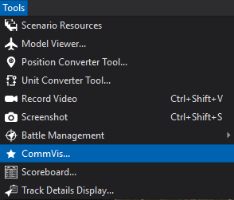
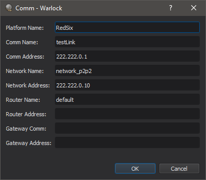
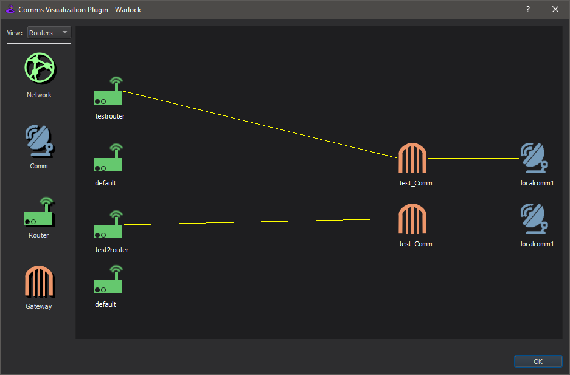

Comms Visualization Tool - Warlock¶
The Comms Visualization Tool is accessible from the Tools menu.
This tool provides a GUI based method for the user to visualize the communications/network configurations.
Views¶
There are currently two custom views available in the tool. The views can be toggled between via the “View” combo box in the upper left corner of the dialog box. The user can navigate around the view by left-clicking the mouse and dragging. This will pan the view around. The user can zoom in and out on a view by scrolling the mouse wheel.
Each device (networks, comms, routers and gateways) is represented on a view with its own distinct icon.
Double clicking on the icon will highlight the icon and bring up information specific to that device.
Network View¶
The first view is the Network view. The Network view shows all the networks defined in the currently loaded scenario along with the comms connected to the networks. There is a visible connection between the comms and the networks they belong to. This view will also show the links between comms on the same or different networks. The visibility of these comm links can be toggled on/off with the “Hide Comm Links” checkbox in the lower left side of the dialog box.

Routers View¶
The second view available in the tool is the Routers view. The Routers view shows all routers defined in the scenario. Gateways defined for routers will have a visible link between them. Remote interfaces defined on gateways are also linked with a visible line between them.
